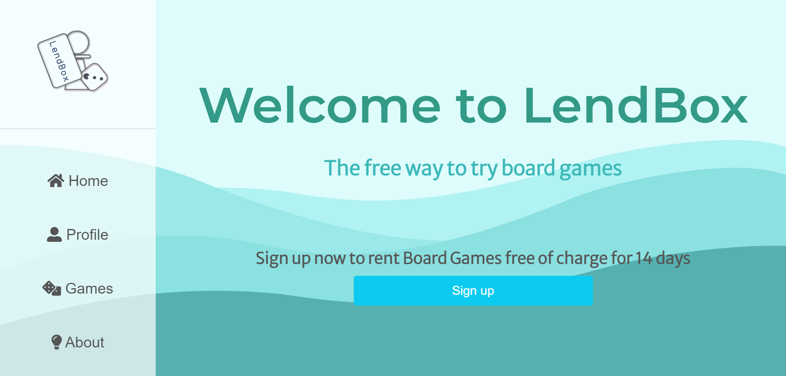

Hi stranger, I'm Andrea
I'm a third year informatics student based in Lund
Welcome to my website
❕ About me
I'm an aspiring developer looking for new and exciting opportunities. Coming from a diverse studying and working background, I'm a genuinely curious learner that loves combating new challanges. If you take a look at my resume you will find that this is not just a cliché - I really do live to learn and I never back away from what's outside of my comfort zone. I dare to say that this is one of my greatest strenghts - I'm never a stranger to new ideas, new perspectives or new skills to develop. Also, I've been described as "quite nice" by anonymous sources which is a quality I pride myself with.
📃 Resume
Education
| Current | Bachelor of Science in Information Systems, Lund University |
| Sept 2021 - Oct 2021 | Advanced Database Systems (7.5 credits), Lund University |
| Jan 2019 - Jun 2019 | Psychology: Social Psychology (30 credits), Lund University |
| Aug 2014 - Jun 2017 | Degree of Bachelor of Science in Physiotherapy, Lund University |
Work Experience
| Jun 2019 |
Summer job, Minideon Kindergarden, Lund Care of children between ages one to six and kitchen work |
| Mar 2018 - Dec 2018 |
Part time employee, Minideon Kindergarden, Lund Care of children between ages one to six and kitchen work |
| Sept 2017 - Feb 2018 |
Physiotherapist, Surgical Department, SUS Lund Physiotherapy, education and cardiovascular exercise with pre- and postoperative patients |
| Jun 2016 - Aug 2016 |
Rehab assistant in Physiotherapy, Stafvre, Kristianstad Physiotherapy and exercise on group and individual level |
Skills
| Software | Microsoft Office, Microsoft Azure, Microsoft SQL Server Management Studio, Visual Studio, Visual Studio Code, Eclipse, Github, MongoDB |
| Programming |
Backend C#, Java, SQL, NoSQL Frontend HTML & CSS, JavaScript, React, Bootstrap, REST API |
| Management | Scrum & Agile Development |
| Languages | Swedish (native speaker), English (fluent), Croatian (fluent), French (basic conversational and writing skills) | Other | Drivers licence type B |
Projects
| LendBox |
Wanting to learn MERN stack from scratch, I and two friends began working on LendBox - an app where users can browse and lend board games free of charge. Parts of the projects are made with the help from the course Mastering React. The project is a work in progress and as of now we're working on the UI and focusing on the React part. The goal is to connect the frontend with a backend using Node.js, Express.js and MongoDB. You can find LendBox here. Our GitHub repo can be found here. |
|  | |
| Vidly |
Vidly is a fake movie renting service created with React. The project was made as a part of the course Mastering React. Users can register and they are then given authorization to update the movies. If the user is an admin they can also add and delete movies. Movies can be searched for using the search bar or by filtering by genre. Pagination as well as sorting is dynamic and movies can be liked/unliked. The HTTP client I used is Axios and I'm using Joi for frontend validation. The backend is built using Node.js, Express.js and MongoDB. The code for the backend is provided by Mosh Hamedani which is the creator of the course Mastering React. Below is a short demo of how the app works. |